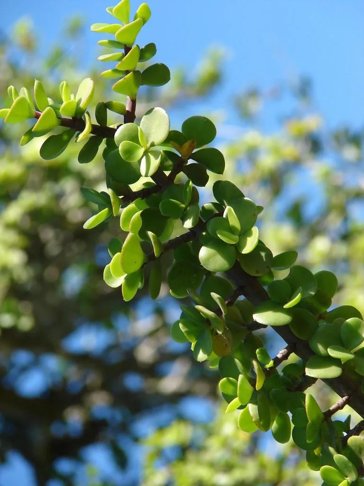

多肉植物 · 植物界
金枝玉叶 Portulacaria afra

马齿苋科马齿苋树属常绿肉质灌木，茎红褐、叶小而圆，耐旱耐修剪，是常见的盆景与多肉观叶植物。
- 分类
- 门被子植物门纲木兰纲目石竹目科马齿苋科属马齿苋树属
- 栖息环境
- 南非东开普省干旱灌丛，喜阳光充足、通风良好、干燥的环境
- 地理分布
- 原产南非；中国各地及世界温暖地区广泛盆栽栽培
- 保护级别
- IUCN 暂无评估；栽培极普遍，野生种群未受明显威胁
物种志
金枝玉叶为常绿肉质灌木，高 1–2 米，茎干红褐色至紫褐色，幼枝绿色，肉质多汁。叶片对生，倒卵形至圆形，长 1–2 厘米，肉质、亮绿色，在强光与低温下叶缘可泛红。花极小，粉红色，星形，生于枝顶，栽培条件下很少开花。
本种原产南非东开普省的干旱灌丛，喜阳光充足、通风良好的环境，耐旱、耐修剪，是制作盆景与多肉造景的常用材料。它的茎干红褐、叶片圆润，常被误认为“玉树”（燕子掌），但金枝玉叶的叶片更小、茎更细，且属于马齿苋科。金枝玉叶不耐寒，冬季需移入室内；浇水宜干透浇透，忌积水烂根。在南方温暖地区，它也可地栽作花境灌木。
形态与习性
- 株高1–2 米，茎红褐色、肉质
- 叶片对生，倒卵形，长 1–2 厘米
- 花期夏季，花极小、粉红色，栽培少开
- 光照喜光，每天需充足直射光
- 水分耐旱，干透浇透，忌积水
- 土壤疏松透气的颗粒土
- 主要用途盆景造型、多肉造景与室内观叶
趣味知识
- 金枝玉叶常被误认为玉树，但它的叶片更小、茎更细，属于马齿苋科而非景天科。
- 它原产南非干旱地区，茎叶储水能力强，一个月不浇水也能存活。
- 金枝玉叶的茎干在充足光照下会变成红褐色，因此得名“金枝”。
- 它耐修剪，是制作小型盆景与多肉组合造景的优良材料。